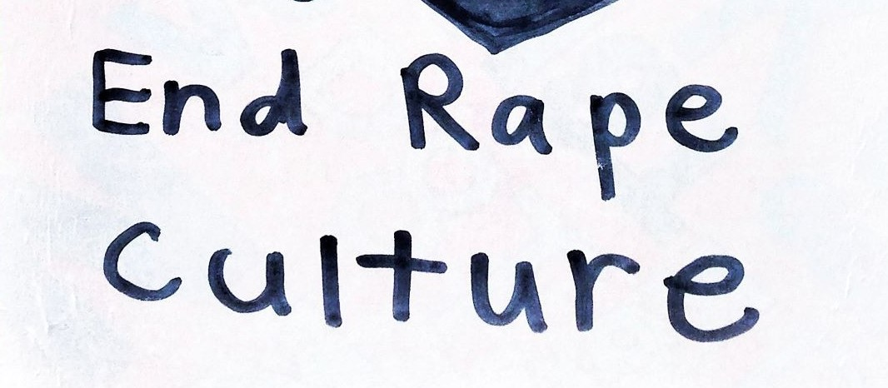
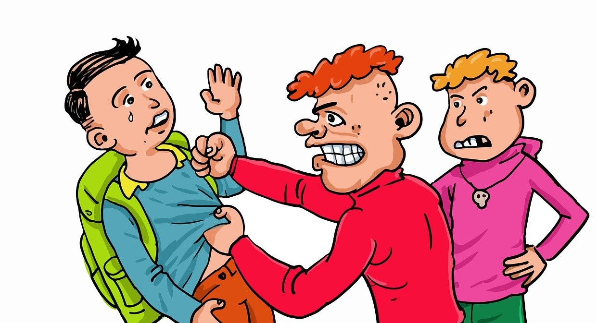

Research Addressing Biases in Artificial Intelligence COVID - 19 Research, Big Data, and Natural Language Processing Domestic Violence, Dating Violence, and Child Abuse in China Domestic Violence, Weibo Data, and Machine Learning Approach Family Violence during COVID-19 quarantine in Canada Intimate Partner/Sexual Violence, Twitter Data, and Machine Learning Approach Information Communication Technologies and Intimate Partner/Sexual Violence Mining Big Data: How Sexual Assault Nonprofit Agencies in Canada Use Twitter  Rape Myths Studies in China  School Bullying Studies in China